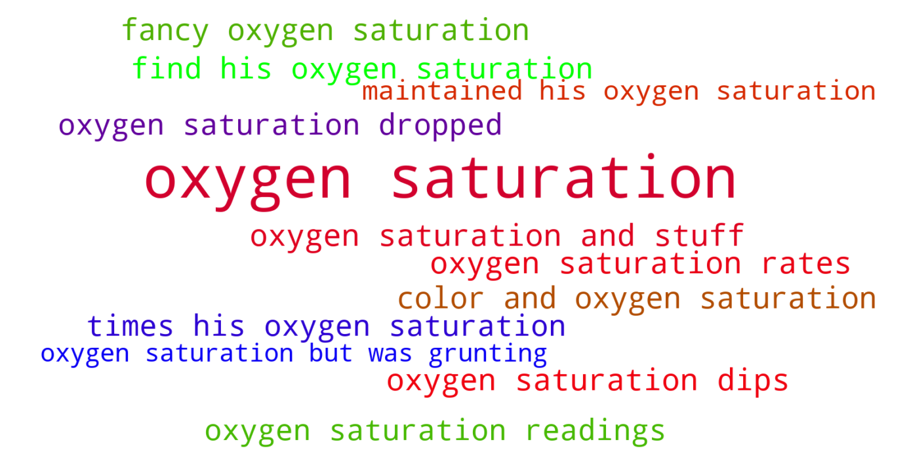

Jump to section:
Samples from Social CorpusHits per UMLS Alias on Social Corpus
Word Cloud Comparison
Embedding Space Comparison
Nearest Neighbors by Semantic Type
Related Analysed Concepts
Samples from Social Corpus
Just trying to stabilize his respirations and oxygen saturation while trying to eat .
Confidence: 1.000. Reddit link
Then all of a sudden there was concern about his color and oxygen saturation .
Confidence: 0.860. Reddit link
Her oxygen saturation rates were very good , but her BPM didn't improve that much since coming home .
Confidence: 0.879. Reddit link
I'm anxious as shit they have her on oxygen right now because her oxygen saturation isn't staying up , stomach distended because of the blockage .
Confidence: 1.000. Reddit link
DD4 has been able to keep her oxygen saturation levels up without an oxygen mask all last night and today !
Confidence: 1.000. Reddit link
So off to urgent care we go , where they find his oxygen saturation is in the 70s .
Confidence: 0.809. Reddit link
But now her oxygen saturation readings are all over the place , especially when she is awake .
Confidence: 0.809. Reddit link
Making sure his oxygen saturation levels were still good .
Confidence: 1.000. Reddit link
Even though he had a good , strong cry , his oxygen saturation was only 65 % .
Confidence: 1.000. Reddit link
Even though he heard me coughing last night and grabbed the thermo to get my temperature and our O2 sensor to see what my oxygen saturation was , I'm being silly .
Confidence: 1.000. Reddit link
Hits per UMLS Alias on Social Corpus
-
oxygen saturation
30 hits
-
molecular oxygen saturation
0 hits
-
oxygen saturation function
0 hits
Word Cloud Comparison
Keywords matching C0369768
Keywords matched against concept. Word size represents frequency.
Keywords co-occurring with C0369768
Co-occurrence is measured at the document-level (i.e. Reddit submissions). Frequencies are normalized to account for keywords common to all CUIs.
Embedding Space Comparison
T-SNE comparison for word embeddings learned from medical domain (EuroPMC) and social media (Reddit) independently.
Pearson correlation for union of closest 1000 neighbors: 0.068
Nearest Neighbors by Semantic Type
Most similar concepts in each of the selected UMLS semantic types. Based on concept embeddings from social corpus.
T044 (Molecular Function)
-
C0369768
Oxygen saturation
1.000 Similarity
-
C1150342
Dopachrome rearranging enzyme
0.443 Similarity
-
C1749457
Ligands activity
0.402 Similarity
-
C0887940
Gene arrangements
0.370 Similarity
-
C0301647
Strand breaks
0.318 Similarity
-
C0010357
Cross reactive
0.315 Similarity
-
C0086321
Cycle futile
0.294 Similarity
-
C1152025
Docs
0.285 Similarity
T074 (Medical Device)
-
C3696780
Tube oxygen
0.839 Similarity
-
C0181744
Oxygen mask
0.828 Similarity
-
C0182130
Oxygen monitors
0.810 Similarity
-
C0462877
Oxygen giving set
0.808 Similarity
-
C0182109
Pulse oximeter
0.785 Similarity
-
C0030067
Oxygenator
0.740 Similarity
-
C0042497
Respirator
0.671 Similarity
-
C0184106
Breathing tube
0.657 Similarity
T201 (Clinical Attribute)
-
C0429622
Oxygen supply
0.836 Similarity
-
C0231832
Breathing rate
0.751 Similarity
-
C0007165
Heart output
0.593 Similarity
-
C0035234
Breathing sound
0.580 Similarity
-
C0005850
Blood volume
0.564 Similarity
-
C1285995
Measure uterine contractions
0.505 Similarity
-
C0442709
End diastolic
0.499 Similarity
-
C0232856
Urine output
0.496 Similarity
T042 (Organ or Tissue Function)
-
C0231940
Oxygenation
0.800 Similarity
-
C1160388
Respiratory tube development
0.661 Similarity
-
C0043229
Breathing work
0.628 Similarity
-
C0005778
Clotting
0.544 Similarity
-
C0232102
Blood fluidity
0.543 Similarity
-
C0920880
Stabilizer
0.526 Similarity
-
C0027045
Heart beating
0.479 Similarity
-
C0232606
Regurgitated
0.471 Similarity
T184 (Sign or Symptom)
-
C0242706
Oxygen stress breathing
0.796 Similarity
-
C0003578
Apnea
0.726 Similarity
-
C0476273
Respiratory distress
0.716 Similarity
-
C0553668
Breathing labor
0.645 Similarity
-
C0221161
Breathing shallow
0.634 Similarity
-
C0423729
Breathing pain
0.620 Similarity
-
C0013404
Trouble breathing
0.596 Similarity
-
C0015967
Fever
0.586 Similarity
T039 (Physiologic Function)
-
C0035203
Ventilation
0.772 Similarity
-
C1456599
Lungs breathing
0.648 Similarity
-
C0232338
Blood flow
0.522 Similarity
-
C0005775
Circulation
0.513 Similarity
-
C0743925
Fetal growth
0.478 Similarity
-
C3179159
Sedative effects
0.467 Similarity
-
C0234886
Lowing
0.445 Similarity
-
C2584297
Seated position
0.442 Similarity
T046 (Pathologic Function)
-
C0242184
Decreased oxygen supply
0.756 Similarity
-
C0034063
Pulmonary edema
0.605 Similarity
-
C3203358
Under breathing
0.605 Similarity
-
C0015930
Fetal distress
0.582 Similarity
-
C0700198
Aspirated
0.580 Similarity
-
C4075684
Hypoxemia during surgery
0.572 Similarity
-
C0034065
Pulmonary embolism
0.564 Similarity
-
C0004144
Collapsed lung
0.535 Similarity
T061 (Therapeutic or Preventive Procedure)
-
C1260866
Blood oxygenator
0.711 Similarity
-
C0199451
Cpap
0.684 Similarity
-
C0035239
Respiratory therapy
0.638 Similarity
-
C0554804
Assisted breathing
0.632 Similarity
-
C0349707
Aspiration
0.599 Similarity
-
C0021459
Breathing treatments
0.599 Similarity
-
C0454508
Breathing control
0.595 Similarity
-
C0420200
Continuous ecg monitoring
0.592 Similarity
T031 (Body Substance)
-
C0225379
Upper respiratory fluid
0.650 Similarity
-
C0370199
Aspirate
0.544 Similarity
-
C1253943
Fluid chest
0.512 Similarity
-
C0162371
Cord blood
0.512 Similarity
-
C0005889
Fluid
0.503 Similarity
-
C0032105
Plasma
0.495 Similarity
-
C1186706
Bolus
0.491 Similarity
-
C0007806
Spinal fluid
0.489 Similarity
T060 (Diagnostic Procedure)
-
C0150496
Heart monitoring
0.635 Similarity
-
C0013798
Ekg
0.631 Similarity
-
C0015945
Fetal monitoring
0.574 Similarity
-
C3825243
Blood sugar monitoring
0.561 Similarity
-
C0199637
Heart rate monitoring
0.552 Similarity
-
C0278336
Fetal ecg
0.552 Similarity
-
C0842481
Fetal monitor internal
0.546 Similarity
-
C0430801
Eeg video monitoring
0.536 Similarity
T005 (Virus)
-
C0597404
Respiratory virus
0.621 Similarity
-
C3743464
Mycobacteriophage whirlwind
0.450 Similarity
-
C3768023
Mycobacteriophage conspiracy
0.412 Similarity
-
C0035236
Rsv
0.365 Similarity
-
C0205939
Cold virus common
0.339 Similarity
-
C0042776
Virus
0.322 Similarity
-
C0086776
Parvovirus
0.321 Similarity
-
C4415400
Phage wrath
0.313 Similarity
T047 (Disease or Syndrome)
-
C0025048
Mas
0.603 Similarity
-
C0035243
Respiratory infection
0.594 Similarity
-
C0031039
Fluid around heart
0.591 Similarity
-
C0033036
Atrial premature contractions
0.579 Similarity
-
C0041912
Upper respiratory infection
0.579 Similarity
-
C0032326
Pneumothorax
0.575 Similarity
-
C1566050
Severe jaundice neonate
0.569 Similarity
-
C0020456
High blood sugar
0.567 Similarity
T023 (Body Part, Organ, or Organ Component)
-
C0225730
Left lung
0.601 Similarity
-
C0024109
Lung
0.596 Similarity
-
C0040578
Trachea
0.582 Similarity
-
C0034052
Pulmonary arteries
0.569 Similarity
-
C0018787
Heart
0.550 Similarity
-
C0034086
Pulmonary valve
0.549 Similarity
-
C0026264
Mitral valve
0.528 Similarity
-
C0458583
Lower lip
0.518 Similarity
T079 (Temporal Concept)
-
C5204315
Time second temperature
0.596 Similarity
-
C1550731
Week continuous
0.562 Similarity
-
C1550732
Day continuous
0.549 Similarity
-
C0039155
Systolic
0.545 Similarity
-
C0449238
Duration
0.534 Similarity
-
C0439600
Remitting
0.471 Similarity
-
C0439606
Pulsating
0.460 Similarity
-
C2985337
Relaxation time between uterine contractions
0.457 Similarity
T067 (Phenomenon or Process)
-
C0042491
Air ventilation
0.557 Similarity
-
C1947910
Pulsed
0.549 Similarity
-
C0000894
Accelerations
0.520 Similarity
-
C0677038
Increase pressure
0.516 Similarity
-
C0868945
Deterioration
0.513 Similarity
-
C5197751
Sea level rise
0.471 Similarity
-
C0033095
Pressure
0.438 Similarity
-
C0563547
Pressure change
0.430 Similarity
T032 (Organism Attribute)
-
C0005903
Temperature
0.553 Similarity
-
C0805393
Breathing spontaneous
0.526 Similarity
-
C0575118
Normal posture
0.506 Similarity
-
C0949285
Antibiotic resistance
0.476 Similarity
-
C0751992
Fetal weight
0.475 Similarity
-
C0003533
Apgar scores
0.454 Similarity
-
C0005890
Stature
0.436 Similarity
-
C0019425
Heterozygous
0.416 Similarity
T034 (Laboratory or Test Result)
-
C5201036
Low platelets
0.545 Similarity
-
C0428309
Magnesium blood
0.510 Similarity
-
C0019029
Hemoglobin levels
0.505 Similarity
-
C0580944
Lying blood pressure
0.484 Similarity
-
C0428554
Blood glucose levels
0.481 Similarity
-
C0580945
Blood pressure standing
0.480 Similarity
-
C1261430
Fasting blood sugar
0.470 Similarity
-
C0428255
Lead levels
0.468 Similarity
T018 (Embryonic Structure)
-
C0231024
Neural tube
0.544 Similarity
-
C0440731
Fetal brain
0.520 Similarity
-
C0015935
Fetal heart
0.462 Similarity
-
C0015965
Fetal
0.437 Similarity
-
C0041632
Umbilical artery
0.431 Similarity
-
C0041637
Umbilical vein
0.427 Similarity
-
C0553522
Cord placenta umbilical
0.408 Similarity
-
C0002630
Amniotic
0.398 Similarity
T059 (Laboratory Procedure)
-
C0344395
Bilirubin levels
0.544 Similarity
-
C0032181
Platelet count
0.506 Similarity
-
C0368930
Clotting time
0.496 Similarity
-
C0005771
Blood cell count
0.494 Similarity
-
C0014772
Counting rbc
0.484 Similarity
-
C0392201
Blood sugar levels
0.484 Similarity
-
C0201913
Bili
0.475 Similarity
-
C0023508
White blood cells
0.475 Similarity
T019 (Congenital Abnormality)
-
C0265783
Underdeveloped lung
0.535 Similarity
-
C0027794
Neural tube defect
0.527 Similarity
-
C0000768
Birth defect
0.510 Similarity
-
C0332941
Corrected transposition
0.508 Similarity
-
C0018798
Heart defect
0.489 Similarity
-
C0020636
Underdevelopment
0.478 Similarity
-
C0003492
Coarctation
0.473 Similarity
-
C0344735
Septum primum defect
0.467 Similarity
T041 (Mental Process)
-
C0004056
Aspirations
0.532 Similarity
-
C1443086
Alertness
0.499 Similarity
-
C2370884
Emotional regulation
0.465 Similarity
-
C0043012
Vigilant
0.417 Similarity
-
C0041654
Unconscious
0.401 Similarity
-
C0679035
Cognitive development
0.398 Similarity
-
C2987186
Jittery
0.390 Similarity
-
C0814069
Visual spatial ability
0.386 Similarity
T048 (Mental or Behavioral Dysfunction)
-
C0234985
Cognitive decline
0.521 Similarity
-
C0563172
Dangerous plans
0.478 Similarity
-
C0424332
Breathhold
0.473 Similarity
-
C0338927
Hospitalism
0.438 Similarity
-
C0349245
Hysterical fit
0.418 Similarity
-
C0270327
Bed wetting
0.417 Similarity
-
C0016142
Firesetting
0.406 Similarity
-
C0547006
Anxiety about blushing
0.404 Similarity
T190 (Anatomical Abnormality)
-
C4025734
Anomaly scalp
0.517 Similarity
-
C0266785
Umbilical cord issue
0.467 Similarity
-
C0302142
Anatomic abnormality
0.429 Similarity
-
C3887590
Stricture ureter
0.429 Similarity
-
C0332482
Distortion
0.406 Similarity
-
C0016169
Sinus
0.404 Similarity
-
C4025319
Head stopped growing
0.395 Similarity
-
C0009918
Contraction joint
0.390 Similarity
T049 (Cell or Molecular Dysfunction)
-
C4725191
Stop lost
0.512 Similarity
-
C0544885
Stop gain
0.383 Similarity
-
C0008625
Chromosomal abnormality
0.372 Similarity
-
C1705285
Mutated
0.370 Similarity
-
C4725190
Start lost
0.325 Similarity
-
C0040715
Translocation
0.311 Similarity
-
C0002938
Aneuploidy
0.305 Similarity
-
C0392769
Patching
0.301 Similarity
T054 (Social Behavior)
-
C0680282
Toleration
0.488 Similarity
-
C0679426
Incompatibility
0.476 Similarity
-
C0597109
Nurse role
0.412 Similarity
-
C0282657
Infibulations
0.411 Similarity
-
C1261512
Attack
0.365 Similarity
-
C0027536
Necking
0.362 Similarity
-
C0680215
Interdependency
0.361 Similarity
-
C0868443
Beating
0.359 Similarity
T195 (Antibiotic)
-
C0003232
Antibiotics
0.453 Similarity
-
C0718575
Antibiotics ear
0.437 Similarity
-
C0013090
Doxycycline
0.380 Similarity
-
C0279516
Antibacterial
0.368 Similarity
-
C0723285
Septa
0.361 Similarity
-
C0002645
Amoxicillin
0.346 Similarity
-
C0030842
Penicillin
0.341 Similarity
-
C0028741
Nystatin
0.296 Similarity
T037 (Injury or Poisoning)
-
C0018843
Overheating
0.440 Similarity
-
C0033119
Pricks
0.426 Similarity
-
C0392012
Crushing abdomen
0.409 Similarity
-
C0006107
Concussion
0.407 Similarity
-
C0269271
Bleeding from breast
0.399 Similarity
-
C1997329
Fall from high place
0.398 Similarity
-
C0417032
Fall through roof
0.394 Similarity
-
C0160420
Kidney injury
0.393 Similarity
T200 (Clinical Drug)
-
C0307304
Pitocin injection
0.440 Similarity
-
C4048176
Oxytocin injection
0.439 Similarity
-
C0723917
Triple antibiotic ointment
0.437 Similarity
-
C5222490
Progesterone injection
0.410 Similarity
-
C1163679
Injections sterile water
0.383 Similarity
-
C3216620
Progesterone vaginal product
0.383 Similarity
-
C1247687
Progesterone suppositories vaginal
0.376 Similarity
-
C3218395
Papain pill
0.358 Similarity
T100 (Age Group)
-
C3494262
Extremely preterm infant
0.434 Similarity
-
C0021289
Newborn
0.422 Similarity
-
C4551581
Full term baby
0.385 Similarity
-
C4048294
Preterm baby
0.375 Similarity
-
C0682054
Mature adult
0.370 Similarity
-
C0021270
Baby
0.307 Similarity
-
C0680085
Early adulthood
0.226 Similarity
-
C0724000
Twenty
0.222 Similarity
T007 (Bacterium)
-
C0018154
Gram positive bacteria
0.406 Similarity
-
C3801085
Enorma
0.342 Similarity
-
C0022828
L forms
0.329 Similarity
-
C0004611
Bacteria
0.327 Similarity
-
C3137302
Brownia
0.315 Similarity
-
C0036111
Salmonella
0.304 Similarity
-
C0597134
Flora oral
0.303 Similarity
-
C2312288
Sharpea
0.292 Similarity
T101 (Patient or Disabled Group)
-
C0233363
Monoamniotic twins
0.396 Similarity
-
C0008098
Child hospitalized
0.381 Similarity
-
C1456639
Living with cancer
0.356 Similarity
-
C0029921
Outpatient
0.355 Similarity
-
C1516213
Cancer patient
0.353 Similarity
-
C0002695
Amputee
0.350 Similarity
-
C0682161
Dually diagnosed
0.348 Similarity
-
C0683995
Drug exposed child
0.335 Similarity